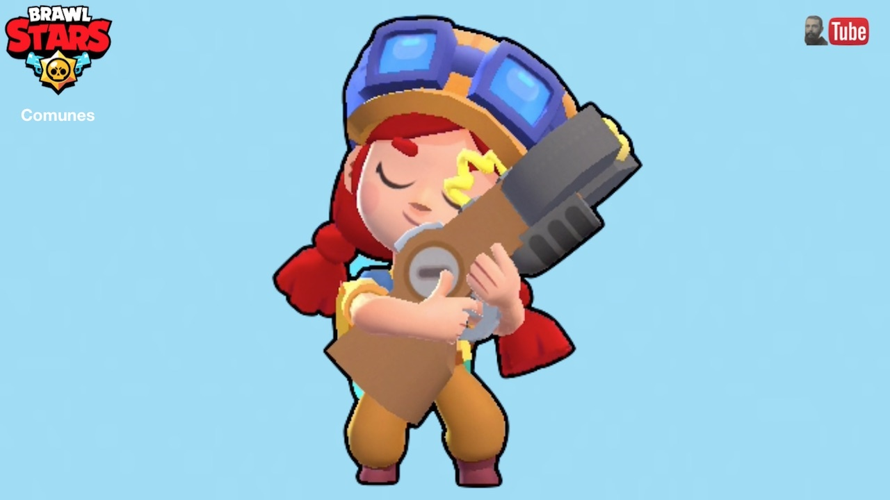

Jessie
"Jessie es un prodigio que fabrica armas y dispositivos a partir de piezas que encuentra en el depósito de chatarra. ¡Quizás algún día su madre Pam vea que puede valerse por sí misma!"

Jessie es una luchadora súper rara que tiene una salud moderadamente baja, un daño moderado y una velocidad de recarga bastante lenta. Su ataque es un orbe eléctrico que rebota entre los enemigos. Su Super planta Scrappy, una torreta con salud y daño moderados que sobresale en atacar, distraer y defender. Su primer dispositivo, Spark Plug, crea una onda de choque alrededor de Scrappy que ralentiza a los enemigos. Su segundo dispositivo, Recoil Spring, duplica la velocidad de ataque de Scrappy durante 5 segundos. Su primer Star Power, Energize, le permite curar su torreta atacándola y su segundo Star Power, Shocky, le permite a su torreta disparar mini orbes de energía que pueden rebotar entre los enemigos. Su Hypercharge, Scrappy 2.0, aumenta la salud y el daño de su próximo Super.
Ataque: Rifle de Choque
"Jessie dispara un orbe de energía. Después de golpear a un objetivo, el orbe rebota hacia el siguiente objetivo dentro del alcance, golpeando hasta a tres enemigos. Cada rebote causa un 25% menos de daño".
Jessie dispara un orbe de energía de alcance y ancho medio con daño moderado. Cuando el orbe golpea a un enemigo, rebota hacia el siguiente enemigo más cercano, incluso enemigos que están fuera de su alcance, detrás de paredes o dentro de arbustos. Puede rebotar hasta 2 veces más después de eso y golpear a 3 enemigos en total antes de desaparecer. El daño del proyectil se reduce en un 25% después de rebotar, así como su velocidad y alcance, pero los rebotes no afectan su velocidad de súper carga.
Súper: ¡Desguazado!
"Jessie despliega una torreta que dispara automáticamente a los enemigos. ¡Está hecha de materiales 100% reciclados!"
Para su Super, Jessie despliega una torreta que tiene más salud que la propia Jessie. Esta torreta se puede lanzar a cualquier lugar y sobre las paredes a poca distancia de Jessie. La torreta está estacionaria y dispara tiros de mediano alcance a los enemigos. Los disparos en sí causan un daño bastante bajo, pero la velocidad de disparo le da un potencial de daño decente.
